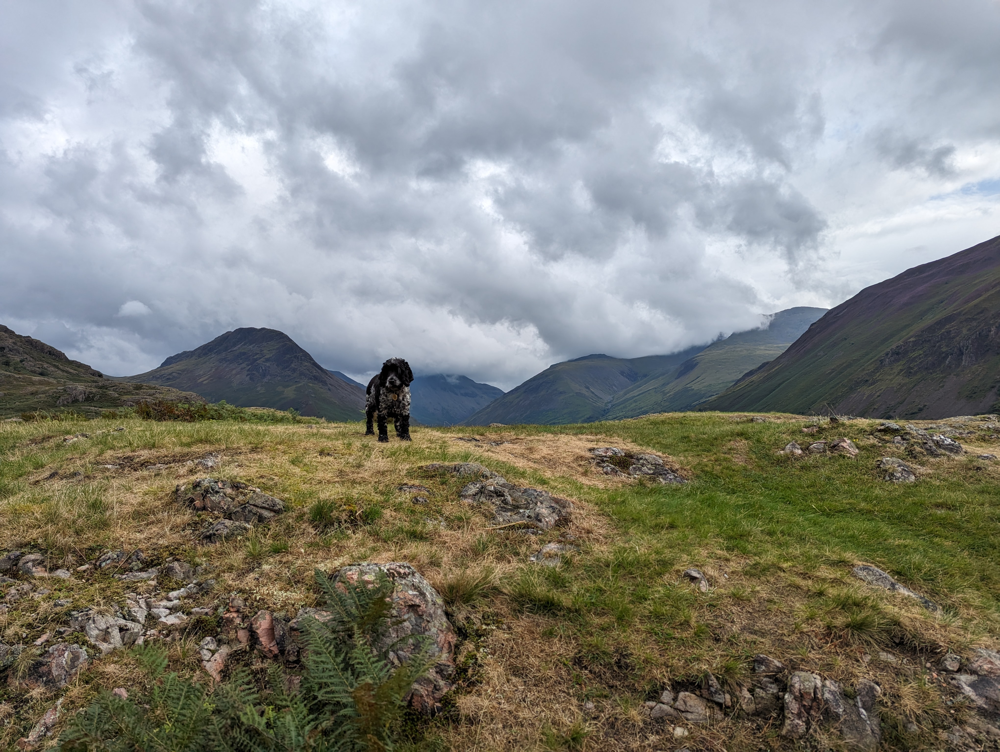
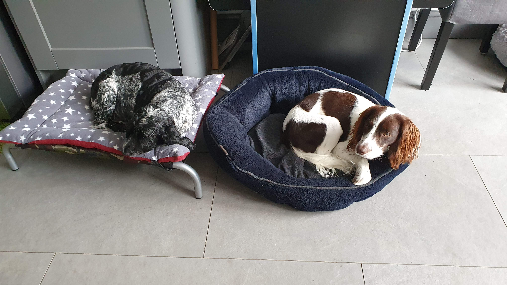
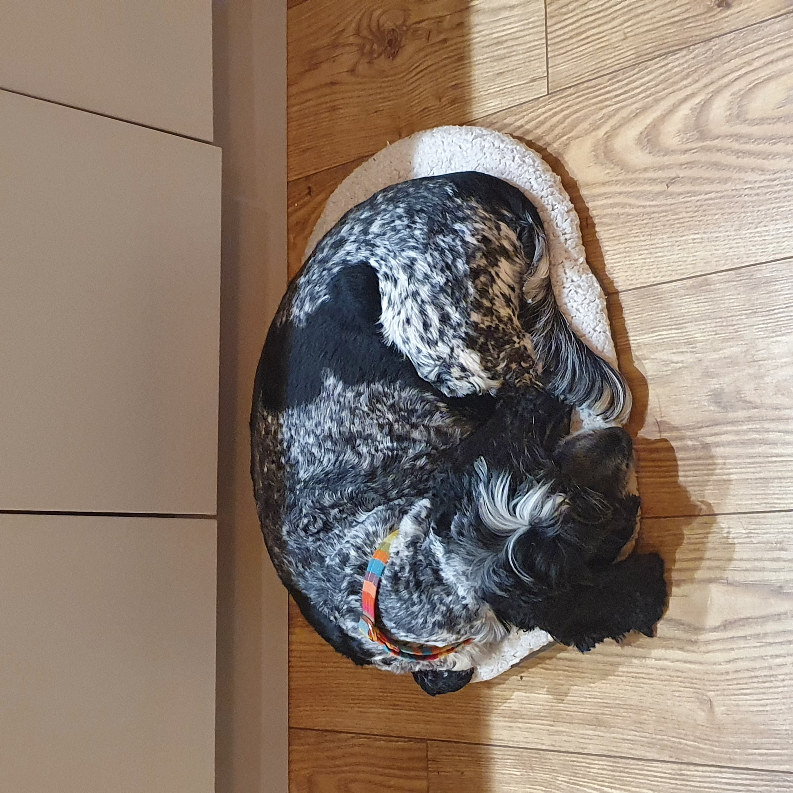
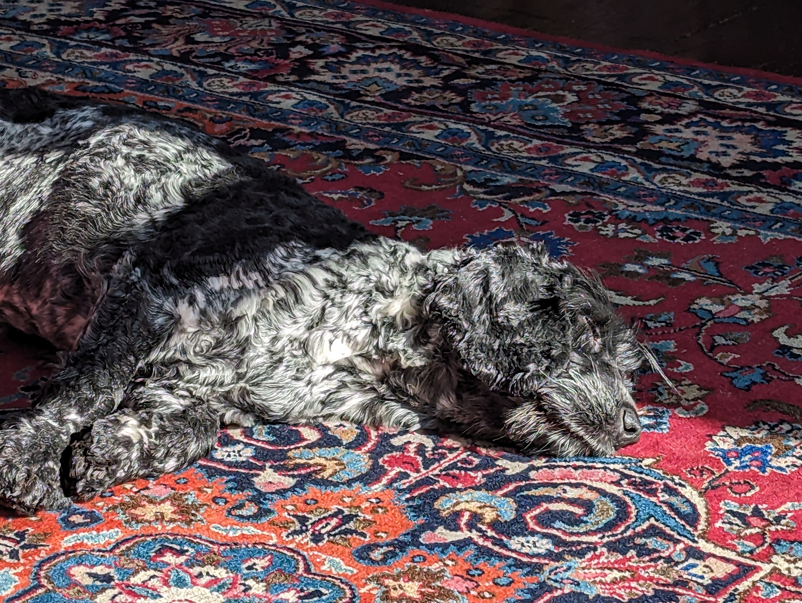

This is where you can find all about a little dog called Indy
Here you go, all about little IndyDog
Let's celebrate! Anthrax. Dave Meniketti from Y&T - Mean Streak. Where the grass is green and the girls are pretty Anthrax. Ooooh, barracuda. Catching a pick from Tracii Guns. Oh yeah, t-t-teacher stop that screamin', teacher don't you see, don't wanna be no uptown fool.





Indy's best bits
- She is a cutie
- She loves going on walks
- She loves to sleep, particularly snoring (because of her short little nose)
Can you guess what breed she is?
- She has black and white fur
- She is a small-medium sized dog
- She loves to retrieve, particularly balls but her ancestors retrieved birds on the moors
- She loves her family
- She is very gentle
- She might have a big brother who is much 'springier' than her
- She has black pads to her paws (that is critical for those in the know ;-)